分析了150条B站视频之后，我发现了做内容做产品的制胜秘籍！
来源：微信公众号 归档日期：2026-09-10 抓取状态：成功 原文字符：7176｜配图：13 张
摘要速览
- 作者用 ZCode（智谱 GLM 客户端）扒了 B 站 AI 创造公开赛热度榜前 150 条视频，对照获奖名单（17 获奖 / 34 未获奖）算出一晚
- 洞察一：获奖与未获奖作品播放中位数只差不到 4 倍（189 万 vs 51 万），投币却差 22 倍（8.2 万 vs 3700）——投币才是真北极星指标
- 洞察二：投币率超 10% 的四个作品全部得奖，共同点是"点开就能玩的小玩具"；粉丝量级与是否获奖基本无关
核心内容
- 播放量只说明"刷到了"，投币要用户付出硬币，是用户真正付出成本的动作——与做产品盯 star/付费转化而非虚荣指标的逻辑一致
- 播放过百万却没得奖的有 9 个，最低投币率 0.12%：流量大 ≠ 认可深
- 洞察三：得奖作品一半以上在持续更新，没得奖的九成只发一条；发不止一条的 12 个作品里 9 个得奖，只发一条的 39 个里只有 8 个
- 方法论：把"什么样能火"的模糊问题交给 Agent 数据化——扒数据、对照结果、算比例，一晚上得出可执行结论
可执行启发
- 做内容/产品先做出"点开就能用/玩"的东西，再谈精致；先做出来就超越 99% 的人
- 盯住用户"付出成本"的行为指标（投币/付费/留存）而不是曝光指标；未验证前以量取胜，持续更新
归属：[[02-输入/按主题/商业与变现/_index|商业与变现]]
我的想法
（待补充）
原文沉淀
目录
- 先说结论：什么样的作品能跑出来
- 然后说这些数是怎么来的
- 第0步，装上，把文件丢进去
- 第1步，先别分析，先要一份数据清单
- 第2步，让它建表，先别让它下判断
- 第3步，改前提，让它在原表上重算
- 第4步，让它看图
- 第5步，自己抽核
- 换成你自己的稿件
- 最后
上周六在上海参加了B站的Builder交流日，当圆桌嘉宾做了些分享，也顺便看了AI创造公开赛的颁奖，冠军奖金一百万，坐在台下是真的挺羡慕的。
其实我有几期分享我做的skill的视频也报名参赛了……但这奖项确实跟我没什么关系，所以我特别好奇，什么样的视频能在B站火起来，能被大量用户投币、试用的作品究竟有什么特点？这些视频来自什么分区、更新几次、粉丝多少、投币和播放是什么比例，我自己一条条翻不太现实，于是回酒店就把这事丢给了ZCode（顺便说一下，ZCode是智谱给GLM做的客户端，下载登录就能用，GUI界面，不用配环境填key。原本为写代码而生，现在也干各种办公的活），让它把公开赛话题热度榜前150条视频扒了一遍，对着获奖名单算了一晚上。
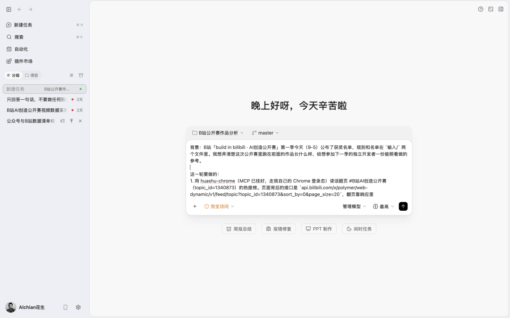
先说结论，后面再讲这些数是怎么来的、你怎么照着做一遍。
先说结论：什么样的作品能跑出来
样本是热度榜前150条视频里筛出的52个作品，17个得奖，34个没有，还有1个是同一位UP的另一个作品，两边都不算。下面是我觉得很有价值的三条洞察， 我觉得不只对B站UP主成立，对于内容创作者、独立开发者其实都相当有借鉴意义：
1. 播放差不到4倍，投币差了22倍。 获奖作品播放中位数189万对51万，投币8.2万对3,700。播放过百万却没得奖的有9个，最低那个投币率0.12%。播放只说明刷到了，投币要花硬币，要用户付出点什么的那个动作才是真的数。这其实和做产品需要盯star、盯付费转化的逻辑是一样的，要专注真正有价值的北极星指标，而不只是盯着播放量或者用户数这种虚荣指标。
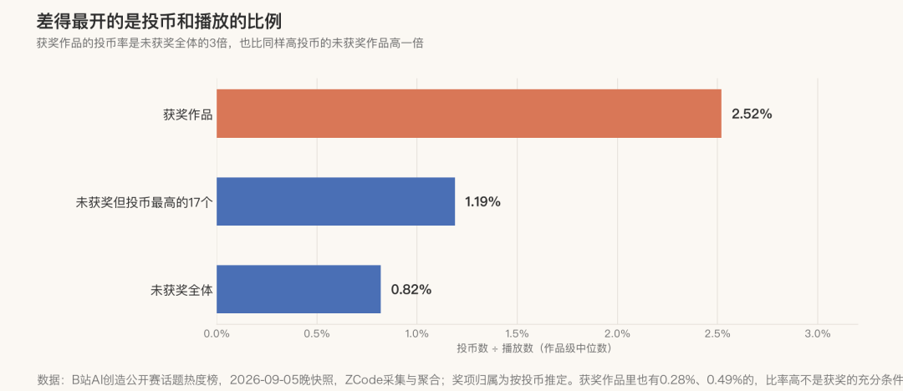
2. 投币率超过10%的四个作品，全部得了奖。 播放只有21万到139万，共同点是点开就能玩的小玩具。另一条路是几百万播放砸出来的，但那条路不是想走就能走。粉丝量级在这个样本里反倒跟得不得奖基本没关系。做个人家立刻能上手的东西，比做个看起来很厉害的东西更接近奖，这条搬到独立开发者身上一样（我一直强调的，先做个垃圾出来再说，只要你做出来了，就超越了99%的人）
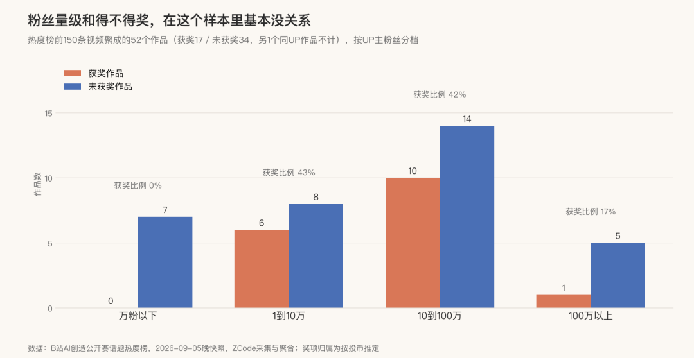
3. 得奖的一半多在更新，没得奖的九成只发一条。 投币按合集累计算，发了不止一条的12个作品里9个得奖，只发一条的39个里只有8个（算的是上榜条数，不是合集全集数）。做内容做产品也是类似的道理，在没有摸到成功的时候，也可以试试以量取胜，自己做内部赛马的，说实话，我做那么多尝试的原因也是如此。
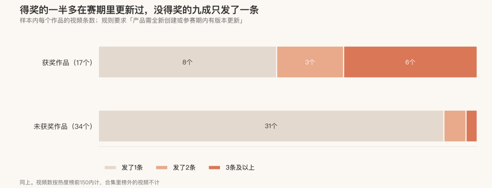
然后说这些数是怎么来的
上面这些结论没有一个数是我自己算的，全是ZCode跑出来、我抽核的。用下来我觉得数据分析这类活它干得挺顺，原因倒也简单，它底子是编程agent，文件系统是真的，终端是真的，脚本落在你眼前那个目录里，一个数字算错了你能顺着追回去。
下面按我实际走的顺序写，你换成自己账号的数据、自己关心的话题，步骤是一样的。
第0步，装上，把文件丢进去
下载装上登录就完事了，没让我填任何API key，也不用弄环境。
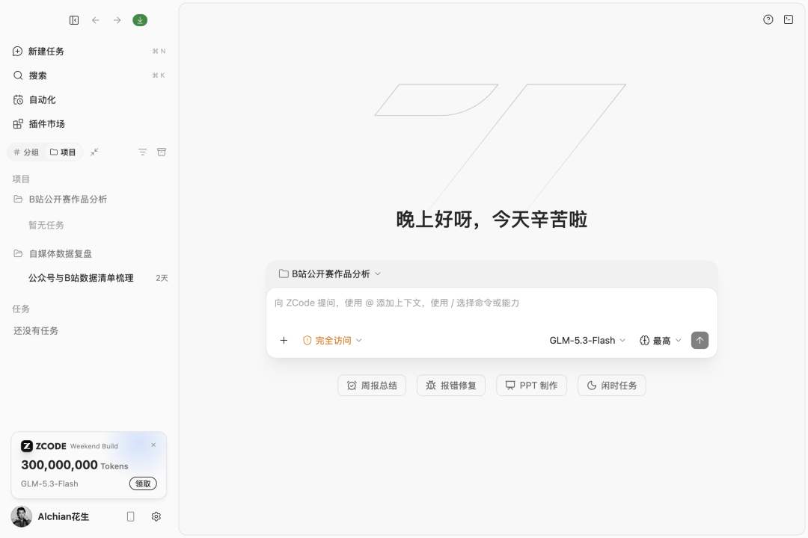
模型我选的是GLM-5.3-Flash，便宜、快，而且能看图，这一晚上全是它在干。智谱这段时间送token送得挺勤，周末有一轮3亿的Weekend Build先到先得（周日零点我看的时候当天名额已经发完了），另外到9月20日之前，活动说明写的是每天晚上十一点到早上九点Flash在ZCode里免费畅用，长任务可以挂到那个时段跑。
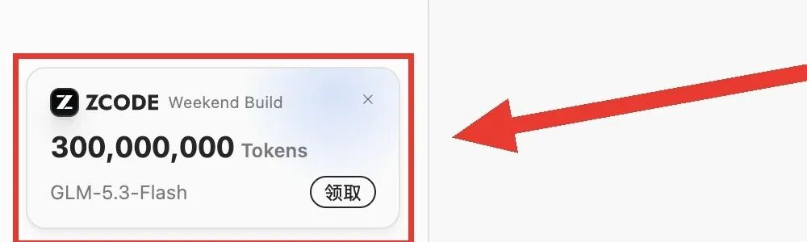
权限选完全访问，然后把一个文件夹拖进项目栏，我放进去的是两个文件：赛事规则和获奖名单，都是当天从B站抄下来的md。
第1步，先别分析，先要一份数据清单
第一轮的提示词，第一句是这样的：
先别分析，这一轮只做采集和数据清单。
后面是背景和五条要求，大意是：读话题页#B站AI创造公开赛的热度榜，至少拿120条，别只拿前20；每条用免登录接口补全播放、点赞、投币、收藏、时长、发布时间、分区、UP主粉丝数；落盘csv和一份数据清单，说清字段口径、哪些能答哪些不能答、发现的坑；所有数字以接口返回为准，拿不到的字段留空，别填0。
这一步我觉得是整套做法里最值钱的。第一句话别急着要结论，先让它告诉你数据能答什么不能答什么，后面每一轮都站在这份清单上。
抓网页我用的是自己写的一个skill（huashu-chrome，带着我浏览器的登录态读网页和接口，B站的话题页不登录看不到完整数据），你没有这个的话，分析自己的账号直接从后台导出csv丢进去最省事；要抓公开页面的话ZCode的插件市场里有浏览器插件，我没试过它抓B站行不行。
然后它开始抓：话题热度榜翻了60页、1199张卡片，去重后1164条视频，取前150条当样本逐条补全，一共打了355次接口，间隔一秒，零风控。这一轮计时25分36秒（真正抓数据的窗口大概20分钟，前面它在读规则和skill文档），交了一个150行28列的csv和一份137行的清单。
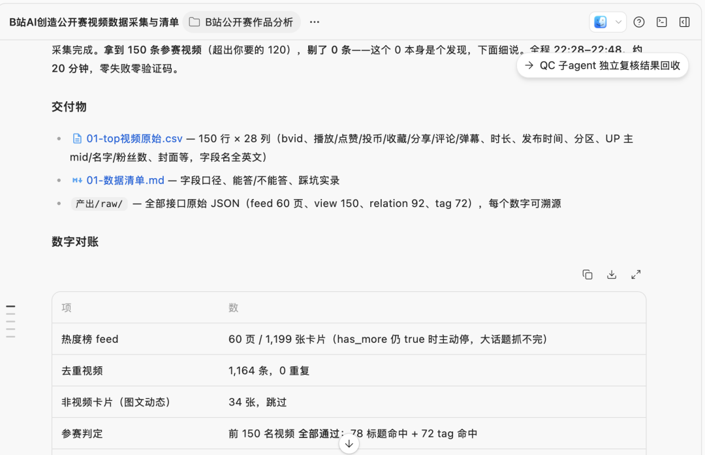
清单里有三件事是我没想到的。它发现B站的接口自带合集字段，150条里102条有合集，我提示词里写的是合集维度只能用同一个UP主近似，它读完接口告诉我不用近似；它抓到4条视频的发布日期在8月20日投稿截止之后，8月21日两条、23日一条、9月1日一条，都挂着话题tag进了前150，这件事我本来留到第三轮当修正喂它的，它第一轮自己先抓出来了；分区名那个字段B站已经不返回了，它换了个搜索接口按分区id映射，34个分区各查一条再抽两个验证。
我把它报的数抽了七条用接口重新拉一遍，播放、投币、粉丝、发布时间、合集id全部对上。
第2步，让它建表，先别让它下判断
第二轮的prompt讲清几件事：作品怎么算（有合集按合集聚合，没合集退化成同一个UP近似，两种口径分开写明）；把获奖名单对齐上去；指标要哪些列。末尾两句我每次都写：至少四个sheet，视频级、作品级、列口径与来源、坑与标注；空值留空不许填0，算不出来的比率别编。
这一轮它自己把我电脑上那个数据分析的skill加载了，我没提。我这台机器上给别的agent写的skill有八十多个，ZCode设置里的技能页一次全认了，任务里它按任务描述自己挑着用。出完xlsx它跑了skill自带的排版检查脚本，抓到列宽没自适应之类三类问题，改了重出一版才交。13分46秒，五个sheet。
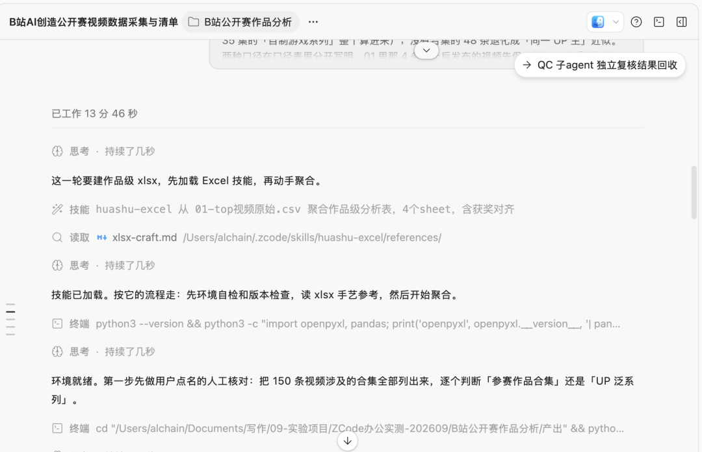
第3步，改前提，让它在原表上重算
看完第二轮的表我改了三处前提，prompt开头一句：三处修正，基于第二轮的表重算，不要另起一张。一是8月20日之后发的标成赛期外，指标分两组各算一遍；二是标题没有公开赛后缀的、或者同一个UP只有一条且粉丝过百万的，标成疑似非参赛，单独列一个sheet给我人工过，主表默认剔除后重算；三是奖项对齐，第二轮它按UP名对齐的，一个UP拿了三个奖，他三个作品全被标成亚军，这不对，奖是发给作品的。
它做完三处，交回来的时候顶了我一下。第三处我说同一个UP多个作品时按投币从高到低分配奖项，它照做了，然后指出有一位UP主的优秀奖因为这条规则换了作品：原来那个合集里有一条视频没打标题标记被第二处修正剔掉了，投币从55,078掉到18,833，低于他另一个作品的37,358，按我的规则优秀奖就挪过去了。它把这条写进坑表，标明真实的获奖对应可能不同，然后问我要不要认「一个UP一个获奖作品」的更严口径。
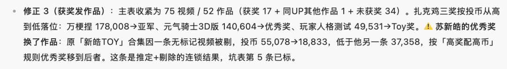
我觉得它顶得对。我给的规则大多数情况下没问题，它跑到了规则会产生副作用的地方，没有默默执行，把副作用摊出来问我。还有两处：第二处剔掉的75条里有5条其实在已经认定为参赛作品的合集里，它判断可能是漏打标记的参赛视频，单独标出来没一刀切；第一处发现那4条赛期外视频恰好全被第二处剔了，两组数完全一样，它专门说了一句这不是算错。
21分3秒，表多了第六个sheet，第一轮清单里被推翻的两处说法它也同步改了，文末加了修订说明。它自己派了个质控子智能体从csv和原始接口响应重算10项断言，10个通过。前面那几个比率我用它的表独立算了一遍，跟它报的一样。改完之后的作品级长这样：
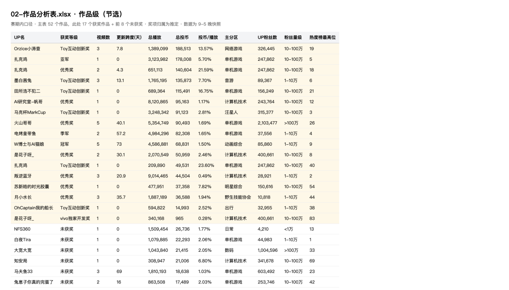
第4步，让它看图
封面那件事以前只能我自己翻，现在Flash能看图，我就顺手丢给了它，提示词就一段：把获奖作品每个投币最高那条视频的封面下载下来，看一遍，告诉我构图、文字、人物、色彩上有什么共同套路，标清楚这段是看图得出的。它不是扫一眼给个印象，是十张一张张读，每张先写一段读图，冠军那张它读出「居中二次元立绘＋四周十几个圆形头像气泡拼贴＋黄字黑描边大字」，季军《世界之门》读的是「左右分屏冷暖对撞，左边哥特少女坐复古房间暖光，右边赛博城市夜景冷蓝，中间竖排大字，影视海报质感」，读完再横着比四个维度，收成五条：大字短句留悬念、产品画面直接当封面主体、左右分屏对比、高饱和加粗描边、有人物当视觉锚点。我对着十张翻了一遍，大部分它读得挺准，色彩和句式那两条它说得比我看到的满一点，十张里有两三张其实挺素的。
第5步，自己抽核
每一轮我都做了一件事，抽几个数自己重算。第一轮抽七条对接口，第三轮抽三个比率对表。这不是不信它，这套做法的核心就在于每个数字带出处，坑表里写着口径，脚本留在目录里，你抽核的成本很低，不抽就白瞎了。
换成你自己的稿件
上面这套走的是公开榜单，换成自己的账号更简单，后台导出csv直接扔进去。上周我拿它跑过一次更长的，两小时十六分，五轮，输入是我自己的六个后台导出csv（公众号三个月的日表加文章表，B站三个月的日趋势加稿件对比），想做一份跨平台的增长复盘。第一轮它把我的问题打回来了：两个平台的数据窗口完全不重叠，同期对比做不了，它自己把任务降级成各平台期内复盘，这个我导数据的时候真没意识到。第三轮我告诉它7月中有四天点赞是投放带来的，它改脚本把整张38周的表重算，投放点赞35,340，自然点赞21,420，加起来跟原始表的总点赞精确相等，然后没顺着我把结论翻掉，播放高涨粉低这个事实还在。最后一轮我把自己那个写报告的skill显式挂上去，交回来13页A4的正式报告，每个结论后面跟着编号能翻到出处，构建脚本留在目录里，下个月新的csv扔进去重跑，这13页自己会长出来。
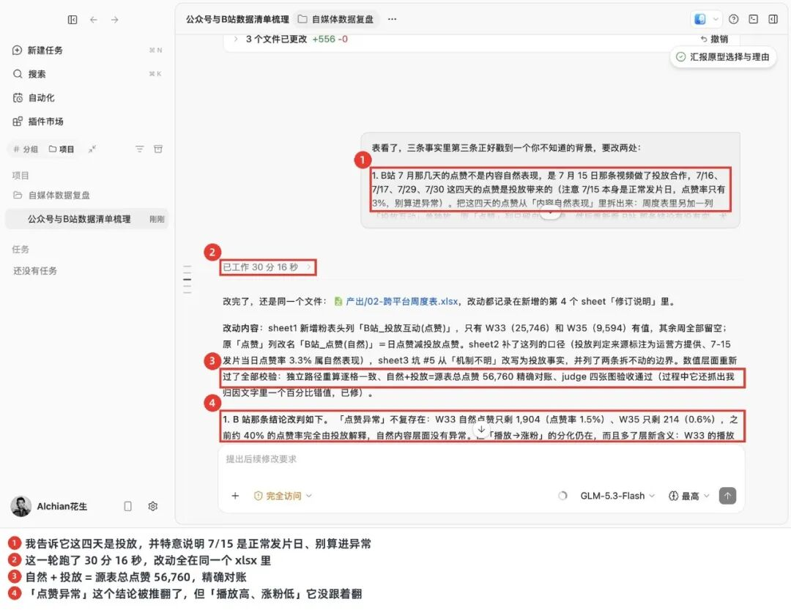
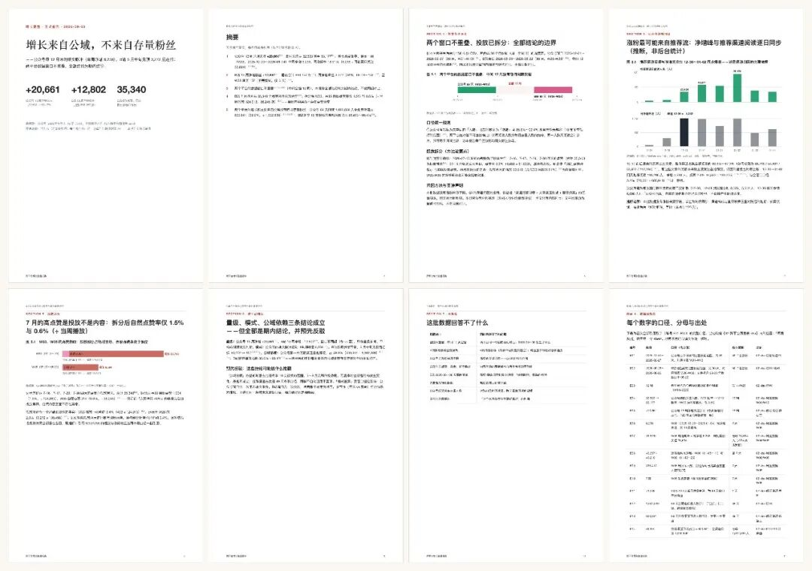
最后
你要是想照着做，提示词里这几句我基本每次都会写进去，直接抄：
先别分析，这一轮只做采集和数据清单。 至少四个sheet：视频级、作品级、列口径与来源、坑与标注。 空值留空不许填0，算不出来的比率别编。 做完把关键数字回算一遍再报，我会用脚本抽核。
其他几条攒下来的：改前提直接说，它会改脚本重跑，比你自己改表快；顺口加一句构建脚本也留下；每轮抽几个数自己算。你要是给别的agent写过skill，去设置→技能页看一眼，我的它自动认了，没认的点右上角刷新一下；MCP在设置里填名字、命令、参数三个字段就能挂上（我这次注册完那一轮它的工具列表里还没挂上，它自己找到skill文档里写的命令行退路，活照样干完了）。
顺便说一句，ZCode在招各行业的专业体验者，叫ZCode Talent，首期面向金融、法律、咨询、产品、市场、运营、人力、财务这些领域找500个人，通过的话送一个月的GLM Coding Plan Pro（价值538元），也能提前用到新功能，预计9月11日前通知结果。报名看ZCode公众号那篇《寻找500位领先行业半步的人》。
归属：[[02-输入/按主题/商业与变现/_index|商业与变现]]